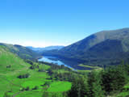
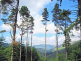
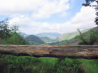
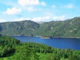
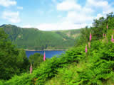
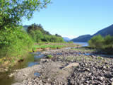
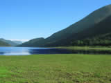
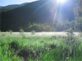
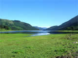

The 3 mile long and 160 feet deep lake of Thirlmere lays in a valley between Grasmere and Keswick on the A591.
Originally it was two smaller lakes, but, such was the demand for water by the increasing population of Manchester in the late 1800’s, that Manchester Corporation bought the area and created the present reservoir. This quite remarkable feat of engineering included the submerging of the two villages of Armboth and Wythburn and raising the level over 50 feet. The only visible remains of the buildings is the small church of Wythburn where it is said that Wordsworth occasionally worshipped.
The water is carried the 100 miles or so to the city along aqueducts without the need of pumps. It is possible to follow this route on foot along the Thirlmere Way Walk.
Walkers visiting the lake and it’s surrounds have the choice of either the A591 side, with the well trodden paths to the summit of Helvellyn, or, the quieter narrow tarmac’d road on the western shore.The latter is ideal for gentle walks on paths through parts of the 2000 acres of dense Spruce and Larch trees. In the Spring, there are fine displays of Bluebells.
This part of the National Park is relatively quiet. Amenities around the lake are few, except for Swirls Car Park at the Keswick end. Here, there are toilets with disabled access, and mobile ice-cream and refreshments vans are usually in residence. Boating and swimming are prohibited, but, fishing for the Brown Trout from the shoreline is free.
The Stagecoach Bus Company operates a regular service between Keswick and Ambleside which stops at the Swirls Car Park. For those seeking a peaceful, less crowded excursion, then Thirlmere is the perfect venue.
Click on the photographs for a larger image.
All images open in a new window.
All images are 800x 600 resolution and may take a long time to download on slower internet connections.
For larger images (1024x768), please visit our
computer wallpapers section.
  
  
  